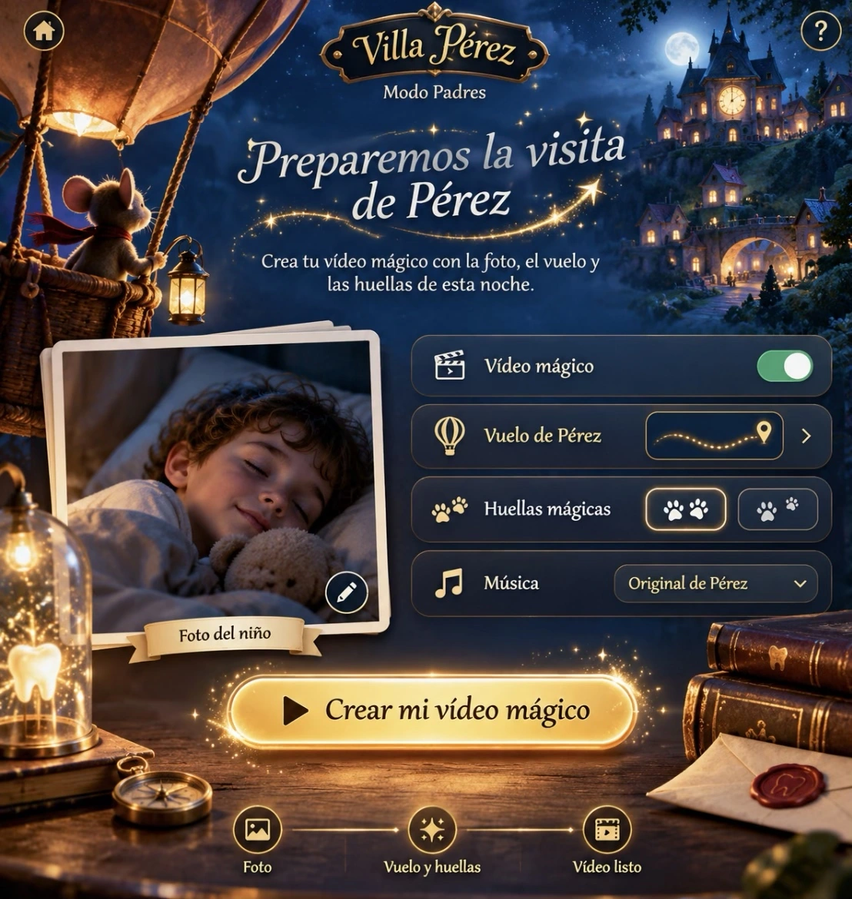

Villa Pérez · Modo padres
Preparemos la visita de Pérez
Crea tu vídeo mágico con la foto, el vuelo y las huellas de esta noche.
Elige su foto con el lápiz. Se guarda solo en este dispositivo.

Villa Pérez · Modo padres
Crea tu vídeo mágico con la foto, el vuelo y las huellas de esta noche.
Elige su foto con el lápiz. Se guarda solo en este dispositivo.